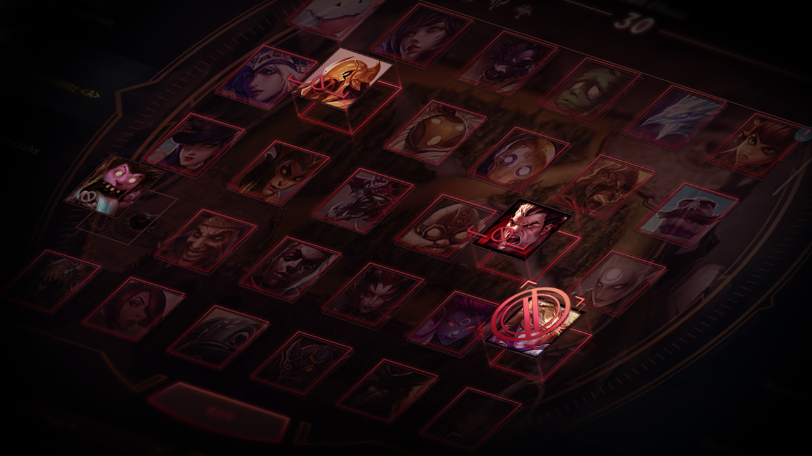
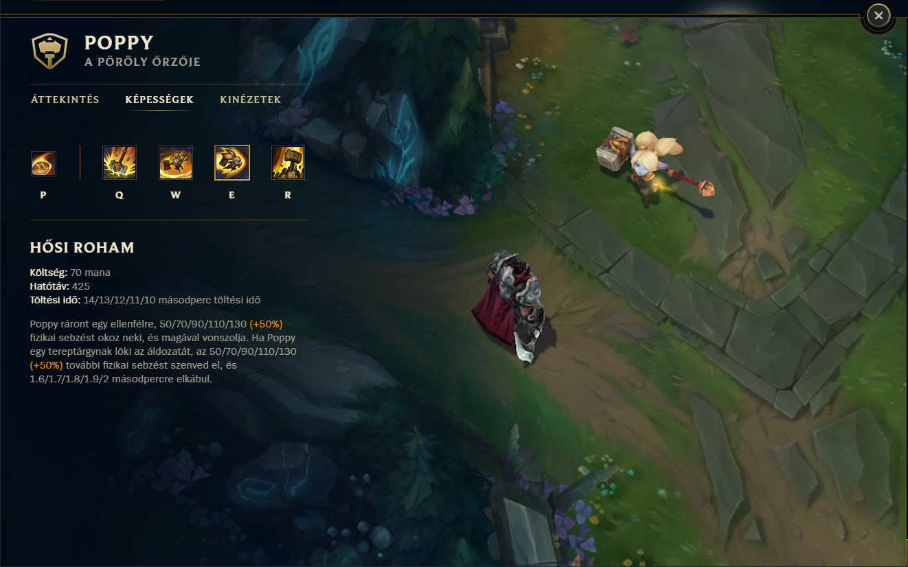

A League of Legends játékmenete középpontjában az 5 vs. 5 csapatok közötti küzdelem áll a Summoner's Rift térképen. A cél az ellenfél Nexusának elpusztítása, ami a csapatok bázisán található. A játékosok egyedi hőseiket, championjeiket irányítják, miközben stratégiai döntéseket hoznak és küzdenek az ellenfél ellen.

Mielőtt a játék elkezdődik, a csapatok kiválasztják és tiltják a karaktereket a Pick and Ban fázisban. Ez lehetővé teszi számukra, hogy befolyásolják a játékmenetet, kiválasztva vagy tiltva bizonyos erős karaktereket az ellenfél és saját csapatuk számára.
A játékosoknak kijelölt sávokon, úgynevezett lane-eken kell harcolniuk. A játékban négy fő szerep van: a top (felső), a jungle (erdő), a mid (középső) és a bot (alsó) lane. Minden szerepnek specifikus feladatai és felelősségei vannak a csapatban.
A játékosoknak minionokat kell elpusztítaniuk, hogy aranyat és tapasztalatot szerezzenek. Az aranyat felszerelések vásárlására, a tapasztalatot pedig szintlépésre használják, ami növeli a championjük erősségét és képességeit.
A játék folyamatos kiegyensúlyozása érdekében a fejlesztők rendszeresen frissítik a játékot. Új championök, térképek és egyensúlyi változtatások teszik változatossá a játékot, miközben a szerepek közötti egyensúlyt próbálják fenntartani.
.png)
A játékosok rangsorolt mérkőzéseken is részt vehetnek, ahol a versenyszerű kihívások révén próbálják meg feljebb lépni a ranglétrán. A League of Legends World Championship és más regionális versenyek az e-sport színtéren is lehetőséget nyújtanak a versenyzőknek.
.jpg)
A játékmenet kiemelkedő taktikai elemeket tartalmaz. A csapatoknak együtt kell működniük a tornádók, baronok és sárkányok elfoglalásához, valamint stratégiai döntéseket kell hozniuk a térkép különböző pontjainak elfoglalása érdekében.
.jpg)
Minden champion rendelkezik egyedi képességekkel és ultimátumokkal, amelyek kulcsfontosságúak a játék során. A játékosoknak taktikailag kell alkalmazniuk ezeket a képességeket a harcok során, és megfelelően reagálniuk kell az ellenfél lépéseire.
